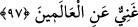

KÂBE VE HAC
96. Şüphesiz, âlemlere bereket ve hidâyet kaynağı olarak insanlar için kurulan ilk
ev (mâbed), Mekke’deki (Kâbe) dir.
97. Orada apaçık nişâneler, (ayrıca) İbrâhîm’in makamı vardır. Oraya giren
emniyette olur. Yoluna gücü yetenlerin o evi haccetmesi, Allah’ın insanlar üzerinde
bir hakkıdır. Kim inkâr ederse bilmelidir ki, Allah bütün âlemlerden müstağnîdir.
“Doğrusu insanlar için ilk kurulan ev” diye ifade edilen Beyt, bir kimsenin
gecelediği yer mânasında iken sonraları mutlak olarak bir mekân için kullanılmıştır.
Rivâyet edilir ki: “Kıble, Kâbe’ye çevrilince yahûdîler Hz. Peygamber (s.a.)’in
peygamberliğine dil uzatarak şöyle dediler: “Beyt-i Makdis, Kâbe’den daha önce
kurulmuştur. Burası, mahşerin kurulacağı ve peygamberlerin hicret ettiği yerdir,
peygamberlerin kıblesidir. Allah Teâlâ’nın tüm âlemler için mübârek kıldığı ve Hz.
Mûsâ (a.s.) ile konuştuğu dağ bu topraklardadır. Kâbe’den daha fazîletlidir. İşte bütün
bu sebeplerden dolayı kıblenin Beyt-i Makdis’den Kâbe’ye çevrilmesi bâtıl bir
harekettir.”
Yahûdîlerin bu sözü üzerine bu âyet nâzil olmuştur: “Doğrusu” kullar için “kurulan”
ve onlara ibâdetgâh kılınan -ki kuran Allah’dır- “ilk ev, Mekke’de olandır.”
Bekke, o saygın şehrin (Beled-i Harâm’ın) özel adı olup, bir kişi birine zahmet
verdiği zaman kullanılan (Bekkehu -
-) kelimesinden gelmektedir. Çünkü, insanlar
hac esnasında büyük bir izdiham yaşıyorlardı. Bekke; aynı zamanda kırdı anlamına da
gelir. Dolayısıyla zâlimlerin boynunu kırdığı için, bu şehre bekke denmiş olabilir.
Çünkü, hiçbir zorba yoktur ki Mekke’ye kötü niyetle yaklaşsın da Allah onun belini
kırmış olmasın!
Haccâc’ın, Abdullah b. Zübeyr (r.a.)’i, Mescid’i Harâm’da sıkıştırıp Ebû Kubeys
dağına mancınık kurarak Kâbe’yi dövmesi ve Abdullah’ı öldürmesi ile ilgili olarak
anlatılanlar, Kâbe’ye zarar vermek ve ona kötü maksatla yaklaşmak sayılmaz. Çünkü,
Haccâc’ın maksadı, Abdullah’ı ele geçirmekti.
Hz. Peygamber (s.a.)’e insanlar için ilk kurulan evin hangisi olduğu soruldu.